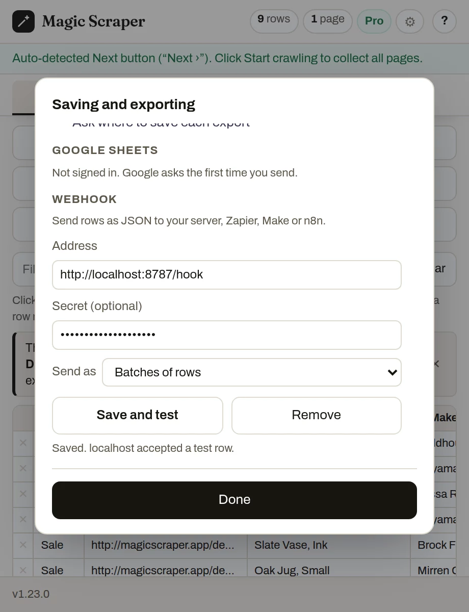

Guide
Scraped rows, straight to your server.
Magic Scraper's Pro webhook posts the rows you scrape, as JSON, to an address you choose. Point it at Zapier and you need no code at all. Point it at your own server and you need very little: here is a complete receiver in Node.js and another in PHP, about 40 lines each with no packages, plus the safe way to hand the rows to a shell script.
What arrives
Each Send to webhook, and each scheduled run you tick it for, makes a POST with a JSON body. By default rows come in batches of 1,000, each batch saying which page it came from and which part of the whole it is. Every value is the text as it was scraped, so a phone number keeps its leading zero.
{
"source": "magic-scraper",
"version": "1.23.0",
"event": "rows",
"trigger": "manual",
"page": { "url": "https://example.com/members", "title": "Members" },
"sent_at": "2026-10-25T09:30:00.000Z",
"batch": { "index": 1, "count": 1 },
"total_rows": 2,
"columns": ["Name", "Phone", "City"],
"rows": [
{ "Name": "Acme Roofing", "Phone": "0207946001", "City": "Leeds" },
{ "Name": "Bolt Electric", "Phone": "0207946002", "City": "York" }
]
}| What it means | |
|---|---|
X-Magic-Scraper-Secret | The secret you typed, sent as a header so your receiver can refuse anyone else |
event | rows, or test for the one made-up row that Save and test sends |
trigger | manual for the button, schedule for a scheduled run |
| Send as: one item per row | The body is just the list of rows. Zapier runs a Zap once for each |
| Addresses | https only, so rows are encrypted on the way. Plain http is allowed for localhost |
| Errors | 429 and 5xx are retried twice. Anything else is shown to you, and a scheduled run still saves its CSV |
A receiver in Node.js
Node 18 or later, nothing to install. It checks the secret in constant time, appends each row to rows.jsonl as one line of JSON, answers 200, and logs where the rows came from. Download receiver.mjs.
// Receive rows from Magic Scraper's "Send to webhook" and append them to
// rows.jsonl, one JSON object per line. Node 18 or later, no packages.
//
// MS_SECRET=your-secret node receiver.mjs
// ON_ROWS=./on-rows.sh MS_SECRET=your-secret node receiver.mjs (optional script)
import { createServer } from 'node:http';
import { appendFileSync } from 'node:fs';
import { timingSafeEqual } from 'node:crypto';
import { spawn } from 'node:child_process';
const PORT = Number(process.env.PORT) || 8787;
const SECRET = process.env.MS_SECRET || ''; // the Secret typed in Magic Scraper, if any
const ON_ROWS = process.env.ON_ROWS || ''; // a script to run with the new rows on stdin
const FILE = process.env.MS_FILE || 'rows.jsonl';
function secretOk(got) {
if (!SECRET) return true;
const a = Buffer.from(String(got || '')), b = Buffer.from(SECRET);
return a.length === b.length && timingSafeEqual(a, b);
}
createServer((req, res) => {
if (req.method !== 'POST' || req.url !== '/hook') return res.writeHead(404).end();
if (!secretOk(req.headers['x-magic-scraper-secret'])) return res.writeHead(401).end();
const chunks = [];
let size = 0;
req.on('data', (c) => { size += c.length; if (size > 25e6) req.destroy(); else chunks.push(c); });
req.on('end', () => {
let msg;
try { msg = JSON.parse(Buffer.concat(chunks).toString('utf8')); } catch { return res.writeHead(400).end(); }
// "Batches of rows" (the default) sends an object; "One item per row" a bare list.
const rows = Array.isArray(msg) ? msg : msg.rows || [];
if (!Array.isArray(msg) && msg.event === 'test') {
console.log('Test row from Magic Scraper', msg.version, '- saved settings work.');
return res.writeHead(200, { 'content-type': 'application/json' }).end('{"ok":true}');
}
const lines = rows.map((r) => JSON.stringify(r)).join('\n') + '\n';
appendFileSync(FILE, lines);
const where = Array.isArray(msg) ? '' : ` from ${msg.page.url} (batch ${msg.batch.index}/${msg.batch.count})`;
console.log(`${rows.length} rows${where}`);
res.writeHead(200, { 'content-type': 'application/json' }).end(JSON.stringify({ ok: true, rows: rows.length }));
// The rows go to the script on stdin, never on its command line: scraped
// text is written by whoever made the page, and a shell would run it.
if (ON_ROWS && rows.length) {
const p = spawn(ON_ROWS, [], { stdio: ['pipe', 'inherit', 'inherit'] });
p.on('error', (e) => console.error('ON_ROWS failed:', e.message));
p.stdin.end(lines);
}
});
}).listen(PORT, () => console.log(`Waiting for Magic Scraper on http://localhost:${PORT}/hook`));Run it with MS_SECRET=your-secret node receiver.mjs. JSON Lines is used rather than CSV because the columns can differ from one site to the next; one object per line never breaks, and every tool reads it.
A receiver in PHP
PHP 8.1 or later, nothing to install, and it runs on ordinary shared hosting. Same behaviour: secret checked with hash_equals, one row per line, the file locked while it is written. Download hook.php.
<?php
// Receive rows from Magic Scraper's "Send to webhook" and append them to a
// JSON Lines file, one row per line. PHP 8.1 or later, no packages.
//
// Test on your own computer: MS_SECRET=your-secret php -S localhost:8787 hook.php
// On a server: put this file in your web root and keep MS_FILE outside it.
$secret = getenv('MS_SECRET') ?: ''; // the Secret typed in Magic Scraper, if any
$file = getenv('MS_FILE') ?: dirname(__DIR__) . '/magic-scraper-rows.jsonl'; // outside the web root
$onRows = getenv('ON_ROWS') ?: ''; // a script to run with the new rows on stdin
if ($_SERVER['REQUEST_METHOD'] !== 'POST') { http_response_code(405); exit; }
$got = $_SERVER['HTTP_X_MAGIC_SCRAPER_SECRET'] ?? '';
if ($secret !== '' && !hash_equals($secret, $got)) { http_response_code(401); exit; }
$msg = json_decode(file_get_contents('php://input'), true);
if (!is_array($msg)) { http_response_code(400); exit; }
// "Batches of rows" (the default) sends an object; "One item per row" a bare list.
$rows = array_is_list($msg) ? $msg : ($msg['rows'] ?? []);
header('Content-Type: application/json');
if (!array_is_list($msg) && ($msg['event'] ?? '') === 'test') { echo '{"ok":true}'; exit; }
$lines = '';
foreach ($rows as $row) $lines .= json_encode($row, JSON_UNESCAPED_UNICODE | JSON_UNESCAPED_SLASHES) . "\n";
file_put_contents($file, $lines, FILE_APPEND | LOCK_EX);
echo json_encode(['ok' => true, 'rows' => count($rows)]);
// The rows go to the script on stdin, never on its command line: scraped text
// is written by whoever made the page, and a shell would run it. An array
// command (PHP 7.4+) starts the script without a shell at all.
if ($onRows !== '' && $rows) {
$p = proc_open([$onRows], [0 => ['pipe', 'r'], 1 => ['file', '/dev/null', 'w'], 2 => ['file', '/dev/null', 'w']], $pipes);
if (is_resource($p)) { fwrite($pipes[0], $lines); fclose($pipes[0]); proc_close($p); }
}On a server, upload it to your web root and keep the rows file outside it (the default is one folder up), or anyone could download your rows. To try it on your own computer: MS_SECRET=your-secret php -S localhost:8787 hook.php.
Handing the rows to a shell script, safely
Both receivers can start a script of yours for every batch: set ON_ROWS=./on-rows.sh. The script gets the new rows on standard input, one JSON object per line. This one keeps a CSV of names and phone numbers. Download on-rows.sh.
#!/bin/sh
# Called with the new rows on stdin, one JSON object per line.
# Example: keep a CSV of name and phone. jq treats every value as data.
jq -r '[."Name", ."Phone"] | @csv' >> leads.csvNever put a scraped value on a command line. Everything you scrape was written by whoever made the page. A receiver that builds a command such as "notify " + row.Name and runs it through a shell will run any $(…) or ; that page contains. That is why the receivers above pass rows on stdin and start the script without a shell (spawn with no shell option in Node, an array command in proc_open in PHP), and why jq handles every value as data. We tested it with rows whose names were $(touch PWNED) and ; touch PWNED3 #: both were stored as text and nothing ran.
The same goes for a sheet. A cell that starts with = is a formula to Excel and Google Sheets, so if you turn the rows into a spreadsheet, treat leading =, +, - and @ as text. Magic Scraper's own exports already do.
Try it on your own computer first
Start a receiver
Run either one: node receiver.mjs or php -S localhost:8787 hook.php. Both listen on port 8787.
Give Magic Scraper the address
In the popup: gear → Saving and exporting → Webhook. Address http://localhost:8787/hook, and the same secret if you set one.
Press Save and test
One made-up row is sent. It is saved only if your receiver answers 200, so a typo shows up now, not at 3am on a schedule.
Send some rows
Open any list, press Send to webhook, and watch them arrive in rows.jsonl.

Putting it online
For a receiver on another machine, the address must start with https://. The usual ways: the PHP file on hosting you already have, which almost always has a certificate; the Node receiver behind the web server you already run; or, while you build, a tunnel such as Cloudflare Tunnel or ngrok that gives your computer an https address. Use a long random secret either way.
No server at all? Make a Catch Hook in Zapier, a Custom webhook in Make, or a Webhook node in n8n, and paste its address instead. Pick One item per row for Zapier.
Reasonable questions
Is the webhook free?
It is part of Pro, a one-time payment with no subscription. Exporting CSV, Excel and JSON, and opening a table in Google Sheets, are free.
Do my rows pass through Magic Scraper's servers?
No. The browser posts them straight to the address you set. There is no server of ours in between, and nothing is sent until you press Send to webhook or tick it for a schedule.
Can a scheduled run send to my webhook?
Yes. Tick Also send each run's rows to your webhook when you schedule a saved setup. Each run still saves its CSV, and if your receiver is down the run says so instead of losing the rows.
Why does my receiver get a row called Test row?
That is Save and test. It sends one made-up row with event set to test, so you can check the address before real rows arrive. The receivers above skip it.
What if a list has more than 1,000 rows?
It arrives in batches of 1,000, numbered with batch.index and batch.count, so your receiver can tell when it has the whole list.